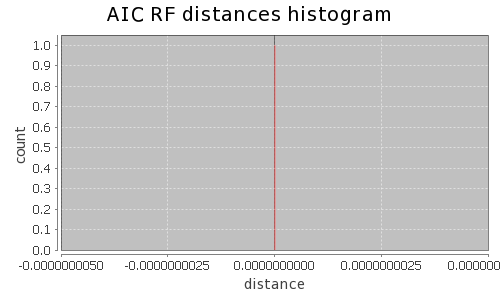
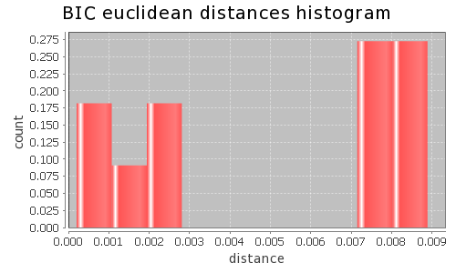

Application Meta
jModeltest 2.1
(c) 2011-onwards D. Darriba, G.L. Taboada, R. Doallo and D. Posada,(1) Department of Biochemistry, Genetics and Immunology
University of Vigo, 36310 Vigo, Spain.
(2) Department of Electronics and Systems
University of A Coruna, 15071 A Coruna, Spain.
e-mail: ddarriba@udc.es, dposada@uvigo.es
Tue May 14 08:11:20 EDT 2013
Linux 2.6.32-279.22.1.el6.x86_64, arch: amd64, bits: 64, numcores: 8
| Citation: | Darriba D, Taboada GL, Doallo R and Posada D. 2012. "jModelTest 2: more models, new heuristics and parallel computing". Nature Methods 9, 772. |
Settings
Arguments = -d aligned.fasta -g 4 -f -AIC -BIC -a -S BESTInput Alignment: "aligned.fasta"
NumTaxa = 6
Length = 7,583
Phyml version = 3.0
Phyml binary = PhyML_3.0_linux64
Candidate models = 12
number of substitution schemes = 3
including models with equal/unequal base frequencies (+F)
including only models without a proportion of invariable sites
including models with/without rate variation among sites (+G) (nCat = 4)
Optimized free parameters (K) = Substitution parameters + 9 branch lengths + topology
Base tree for likelihood calculations = Maximum Likelihood
Tree topology search operation = Best of {NNI, SPR}
Model Optimization Results
| ID | Name | Partition | -lnL | p | fA | fC | fG | fT | ti/tv | R(a) | R(b) | R(c) | R(d) | R(e) | R(f) | p-inv | shape |
|---|---|---|---|---|---|---|---|---|---|---|---|---|---|---|---|---|---|
| 1 | JC | 000000 | 14984.9092 | 10 | - | - | - | - | - | - | - | - | - | - | - | - | - |
| 2 | JC+G | 000000 | 14970.5834 | 11 | - | - | - | - | - | - | - | - | - | - | - | - | 0.4970 |
| 3 | F81 | 000000 | 14695.2119 | 13 | 0.3163 | 0.1551 | 0.2300 | 0.2986 | - | - | - | - | - | - | - | - | - |
| 4 | F81+G | 000000 | 14681.0444 | 14 | 0.3162 | 0.1551 | 0.2300 | 0.2987 | - | - | - | - | - | - | - | - | 0.5040 |
| 5 | K80 | 010010 | 14917.9322 | 11 | - | - | - | - | 1.1520 | - | - | - | - | - | - | - | - |
| 6 | K80+G | 010010 | 14900.8442 | 12 | - | - | - | - | 1.2131 | - | - | - | - | - | - | - | 0.4080 |
| 7 | HKY | 010010 | 14620.7617 | 14 | 0.3159 | 0.1545 | 0.2282 | 0.3015 | 1.1555 | - | - | - | - | - | - | - | - |
| 8 | HKY+G | 010010 | 14603.4801 | 15 | 0.3160 | 0.1544 | 0.2281 | 0.3015 | 1.2239 | - | - | - | - | - | - | - | 0.4080 |
| 9 | SYM | 012345 | 14907.0075 | 15 | - | - | - | - | - | 1.4651 | 2.8148 | 1.5173 | 0.8017 | 2.8532 | 1.0000 | - | - |
| 10 | SYM+G | 012345 | 14888.9476 | 16 | - | - | - | - | - | 1.4949 | 3.0216 | 1.5937 | 0.7619 | 3.0278 | 1.0000 | - | 0.3840 |
| 11 | GTR | 012345 | 14606.8332 | 18 | 0.3160 | 0.1511 | 0.2318 | 0.3012 | - | 1.8894 | 2.7543 | 1.2765 | 1.1526 | 3.7434 | 1.0000 | - | - |
| 12 | GTR+G | 012345 | 14590.0839 | 19 | 0.3158 | 0.1510 | 0.2318 | 0.3013 | - | 1.9733 | 2.9407 | 1.3039 | 1.1581 | 4.0636 | 1.0000 | - | 0.4280 |
There are 1 different topologies. The following table shows the models supporting each topology and the rank according to each Information Criterion, as well as Robinson-Foulds and Euclidean distances with the tree of the best-fit model.
| ID | Models | Topology | AIC | BIC | AICc | DT | |
|---|---|---|---|---|---|---|---|
| 0 |
JC JC+G F81 F81+G K80 K80+G HKY HKY+G SYM SYM+G GTR GTR+G
|
RANK | 0 | 0 | - | - | |
| Weight | 1.0000 | 1.0000 | - | - | |||
| RF | 0 | 0 | - | - | |||
| AVG Distance | 4.5337e-03 | 4.6739e-03 | - | - | |||
| Distance VAR | 1.2180e-05 | 1.2481e-05 | - | - |
AIC Selection Results
Model selected
| Model | GTR+G | ||
|---|---|---|---|
| partition | 012345 | ||
| -lnL | 14590.0839 | ||
| K | 19 | ||
| freqA | 0.3158 | R(a) | 1.9733 |
| freqC | 0.1510 | R(b) | 2.9407 |
| freqG | 0.2318 | R(c) | 1.3039 |
| freqT | 0.3013 | R(d) | 1.1581 |
| ti/tv | - | R(e) | 4.0636 |
| R(f) | 1.0000 | ||
| p-inv | - | gamma | 0.4280 |
Best model tree
(seq0:0.00000001,seq5:0.00000001,((seq1:0.00844448,seq4:0.00500401):0.01636474,(seq2:0.00000001,seq3:0.00000001):0.04432698):0.06514371);
Display best model tree in PhyloWidget
| Model | -lnL | K | AIC | delta | weight | cumWeight |
|---|---|---|---|---|---|---|
| GTR+G | 14590.0839 | 19 | 29218.1679 | 0.0000 | 0.9999 | 0.9999 |
| HKY+G | 14603.4801 | 15 | 29236.9602 | 18.7924 | 0.0001 | 1.0000 |
| GTR | 14606.8332 | 18 | 29249.6664 | 31.4985 | 0.0000 | 1.0000 |
| HKY | 14620.7617 | 14 | 29269.5235 | 51.3556 | 0.0000 | 1.0000 |
| F81+G | 14681.0444 | 14 | 29390.0888 | 171.9209 | 0.0000 | 1.0000 |
| F81 | 14695.2119 | 13 | 29416.4237 | 198.2559 | 0.0000 | 1.0000 |
| SYM+G | 14888.9476 | 16 | 29809.8952 | 591.7273 | 0.0000 | 1.0000 |
| K80+G | 14900.8442 | 12 | 29825.6883 | 607.5205 | 0.0000 | 1.0000 |
| SYM | 14907.0075 | 15 | 29844.0149 | 625.8471 | 0.0000 | 1.0000 |
| K80 | 14917.9322 | 11 | 29857.8645 | 639.6966 | 0.0000 | 1.0000 |
| JC+G | 14970.5834 | 11 | 29963.1669 | 744.9990 | 0.0000 | 1.0000 |
| JC | 14984.9092 | 10 | 29989.8185 | 771.6506 | 0.0000 | 1.0000 |
| -lnL: | negative log likelihod |
| K: | number of estimated parameters |
| AIC: | Akaike Information Criterion |
| delta: | AIC difference |
| weight: | AIC weight |
| cumWeight: | cumulative AIC weight |
Confidence interval
There are 12 models in the 100.00% confidence interval:
GTR+G HKY+G GTR HKY F81+G F81 SYM+G K80+G SYM K80 JC+G JC
Euclidean distances histogram from each model optimized tree to GTR+G tree.

Robinson-Foulds distances histogram from the different topologies to GTR+G topology.
Robinson-Foulds distances histogram from the different topologies to GTR+G topology.
Model Averaged Phylogeny
| Selection criterion | AIC |
|---|---|
| Confidence interval | 100.00% |
| Consensus type | 50% majority rule |
(seq0:0.000000,seq5:0.000000,((seq2:0.000000,seq3:0.000000)1.00:0.044327,(seq1:0.008444,seq4:0.005004)1.00:0.016365)1.00:0.065144);
Display consensus tree in PhyloWidget
BIC Selection Results
Model selected
| Model | HKY+G | ||
|---|---|---|---|
| partition | 010010 | ||
| -lnL | 14603.4801 | ||
| K | 15 | ||
| freqA | 0.3160 | R(a) | - |
| freqC | 0.1544 | R(b) | - |
| freqG | 0.2281 | R(c) | - |
| freqT | 0.3015 | R(d) | - |
| ti/tv | 1.2239 | R(e) | - |
| R(f) | - | ||
| p-inv | - | gamma | 0.4080 |
Best model tree
(seq0:0.00000001,seq5:0.00000001,((seq1:0.00846508,seq4:0.00497169):0.01639283,(seq2:0.00000001,seq3:0.00000001):0.04433707):0.06534246);
Display best model tree in PhyloWidget
| Model | -lnL | K | BIC | delta | weight | cumWeight |
|---|---|---|---|---|---|---|
| HKY+G | 14603.4801 | 15 | 29340.9652 | 0.0000 | 0.9887 | 0.9887 |
| GTR+G | 14590.0839 | 19 | 29349.9075 | 8.9423 | 0.0113 | 1.0000 |
| HKY | 14620.7617 | 14 | 29366.5948 | 25.6296 | 0.0000 | 1.0000 |
| GTR | 14606.8332 | 18 | 29374.4723 | 33.5071 | 0.0000 | 1.0000 |
| F81+G | 14681.0444 | 14 | 29487.1601 | 146.1949 | 0.0000 | 1.0000 |
| F81 | 14695.2119 | 13 | 29506.5614 | 165.5962 | 0.0000 | 1.0000 |
| K80+G | 14900.8442 | 12 | 29908.8923 | 567.9271 | 0.0000 | 1.0000 |
| SYM+G | 14888.9476 | 16 | 29920.8338 | 579.8686 | 0.0000 | 1.0000 |
| K80 | 14917.9322 | 11 | 29934.1348 | 593.1696 | 0.0000 | 1.0000 |
| SYM | 14907.0075 | 15 | 29948.0199 | 607.0547 | 0.0000 | 1.0000 |
| JC+G | 14970.5834 | 11 | 30039.4372 | 698.4720 | 0.0000 | 1.0000 |
| JC | 14984.9092 | 10 | 30059.1551 | 718.1899 | 0.0000 | 1.0000 |
| -lnL: | negative log likelihod |
| K: | number of estimated parameters |
| BIC: | Bayesian Information Criterion |
| delta: | BIC difference |
| weight: | BIC weight |
| cumWeight: | cumulative BIC weight |
Confidence interval
There are 12 models in the 100.00% confidence interval:
HKY+G GTR+G HKY GTR F81+G F81 K80+G SYM+G K80 SYM JC+G JC

Euclidean distances histogram from each model optimized tree to HKY+G tree.
Euclidean distances histogram from each model optimized tree to HKY+G tree.
Robinson-Foulds distances histogram from the different topologies to HKY+G topology.
Model Averaged Phylogeny
| Selection criterion | BIC |
|---|---|
| Confidence interval | 100.00% |
| Consensus type | 50% majority rule |
(seq0:0.000000,seq5:0.000000,((seq2:0.000000,seq3:0.000000)1.00:0.044337,(seq1:0.008465,seq4:0.004972)1.00:0.016393)1.00:0.065342);
Display consensus tree in PhyloWidget